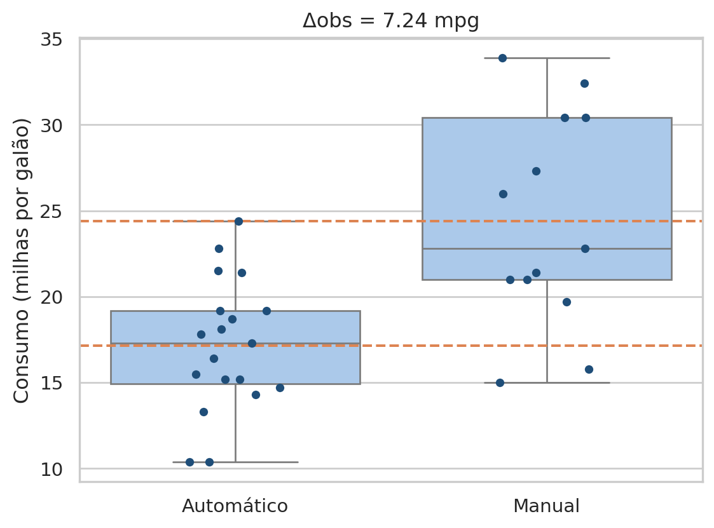
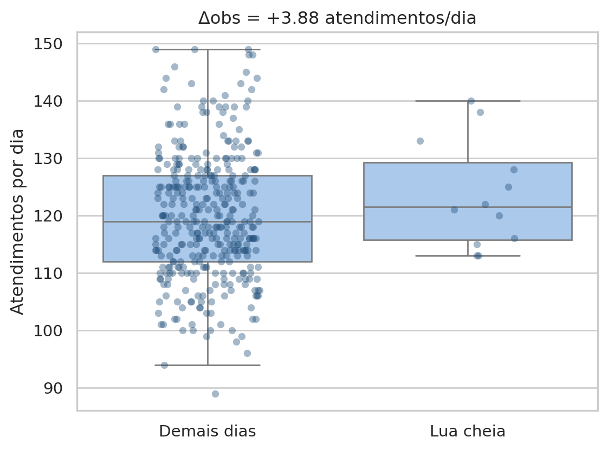
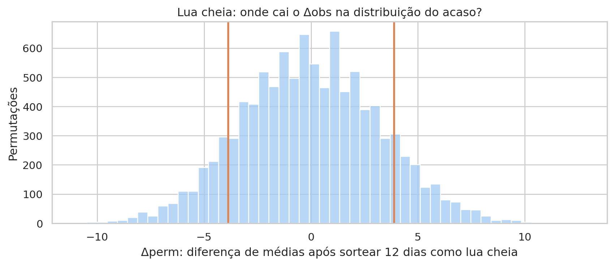
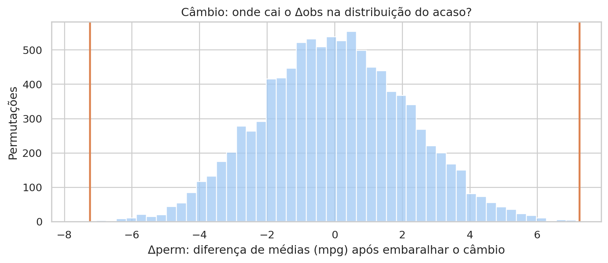
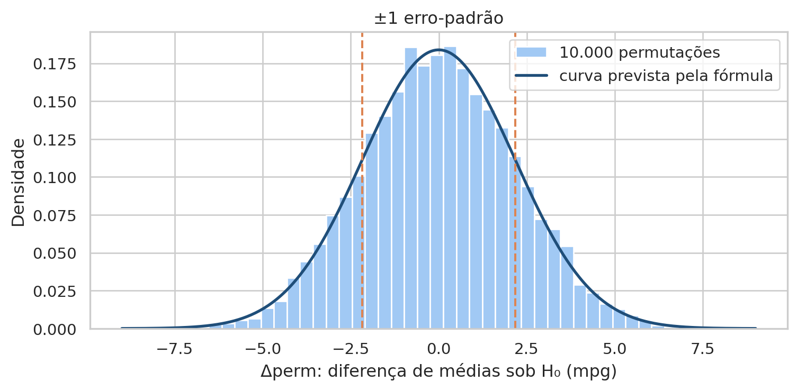
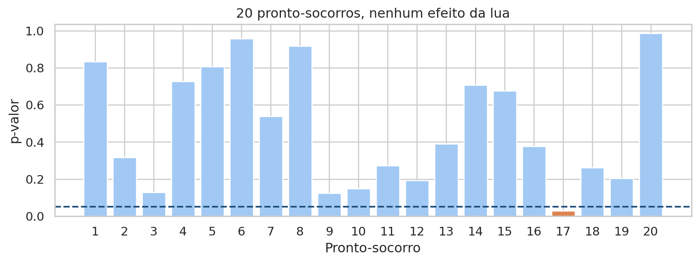

# Importa as bibliotecas e define o tema dos gráficos
import numpy as np
import pandas as pd
import matplotlib.pyplot as plt
import seaborn as sns
from scipy import stats
sns.set_theme(style="whitegrid", palette="colorblind")Aula 7 - Inferência Estatística
Motivação
Na Aula 5, a estatística descritiva resumiu os dados observados sem generalizá-los. Na Aula 6, o diagnóstico orientou o tratamento da base. Em ambas, as conclusões ficaram restritas à amostra disponível. Nesta aula, damos o passo seguinte. Ao comparar dois grupos, encontramos uma diferença. A pergunta passa a ser se essa diferença diz algo sobre o processo que gerou os dados ou se é apenas um resultado da variabilidade aleatória da amostra.
Considere um exemplo clássico. A revista Motor Trend mediu, em 1974, o consumo de 32 modelos de carro. Os carros com câmbio manual percorrem, em média, cerca de 7 milhas a mais por galão do que os automáticos. A diferença parece grande, mas a amostra é pequena. Se a revista tivesse escolhido outros 32 carros, a diferença seria outra. Talvez menor, talvez nula, talvez invertida.
A estatística inferencial oferece um procedimento para responder a essa pergunta. Primeiro, supomos que não existe efeito algum. Em seguida, medimos quão raro seria observar uma diferença do tamanho da encontrada se essa suposição fosse verdadeira. Se a diferença for muito rara sob o acaso, temos evidência contra a suposição inicial. Estudaremos duas formas de construir essa referência: uma por simulação, o teste de permutação, e outra por fórmula, o teste t de Student.
Diferença real ou acaso?
Objetivos de aprendizagem
Ao final deste roteiro, você será capaz de:
- Medir o efeito observado (\(\Delta_{obs}\)) entre dois grupos e comparar sua dispersão com boxplots.
- Formular a hipótese nula (\(H_0\)) e a hipótese alternativa (\(H_1\)) para uma comparação entre grupos.
- Aplicar o teste de permutação e construir a distribuição empírica do acaso.
- Aplicar o teste t de Student, reconhecendo suas premissas, seus limites e sua sensibilidade a valores atípicos.
- Interpretar o p-valor, o nível de significância (\(\alpha\)) e os erros dos tipos I e II, distinguindo significância estatística de relevância prática.
Como usar este roteiro
O roteiro usa a base mtcars.csv, salva em mtcars/data/, e um conjunto simulado de atendimentos em um pronto-socorro, gerado no próprio roteiro.
Não é necessário instalar novas bibliotecas. Os testes usam o módulo stats do SciPy, já empregado nas aulas anteriores.
Ao final, três perguntas ajudam a consolidar a interpretação dos testes.
1. Preparando os dados
Começamos importando as bibliotecas usadas na simulação, nos testes e na visualização.
A base mtcars reúne 32 modelos de carro vendidos nos Estados Unidos em 1973 e 1974. Usaremos duas de suas onze colunas:
| Coluna | Significado |
|---|---|
mpg |
Consumo, em milhas por galão. Quanto maior, mais econômico |
am |
Câmbio: 0 = automático, 1 = manual |
Ao carregar a base, criamos uma coluna auxiliar com um rótulo legível para o câmbio.
# Carrega a base e cria o rótulo do câmbio
mtcars = (
pd.read_csv("mtcars/data/mtcars.csv")
.assign(
1 transmission=lambda df: np.where(
df["am"] == 1,
"Manual",
"Automático",
),
)
)
mtcars.head()- 1
-
np.whereescolhe o rótulo linha a linha, como na Aula 6.
| model | mpg | cyl | disp | hp | drat | wt | qsec | vs | am | gear | carb | transmission | |
|---|---|---|---|---|---|---|---|---|---|---|---|---|---|
| 0 | Mazda RX4 | 21.0 | 6 | 160.0 | 110 | 3.90 | 2.620 | 16.46 | 0 | 1 | 4 | 4 | Manual |
| 1 | Mazda RX4 Wag | 21.0 | 6 | 160.0 | 110 | 3.90 | 2.875 | 17.02 | 0 | 1 | 4 | 4 | Manual |
| 2 | Datsun 710 | 22.8 | 4 | 108.0 | 93 | 3.85 | 2.320 | 18.61 | 1 | 1 | 4 | 1 | Manual |
| 3 | Hornet 4 Drive | 21.4 | 6 | 258.0 | 110 | 3.08 | 3.215 | 19.44 | 1 | 0 | 3 | 1 | Automático |
| 4 | Hornet Sportabout | 18.7 | 8 | 360.0 | 175 | 3.15 | 3.440 | 17.02 | 0 | 0 | 3 | 2 | Automático |
2. A diferença observada
O primeiro passo de qualquer comparação é descritivo. Calculamos uma estatística em cada grupo e medimos a distância entre elas. Chamamos essa distância de efeito observado:
\[ \Delta_{obs} = \bar{x}_A - \bar{x}_B \]
Aqui, \(\bar{x}_A\) e \(\bar{x}_B\) são as médias amostrais dos grupos A e B. O sinal indica o sentido da diferença. Neste roteiro, o grupo A é sempre aquele em que suspeitamos de um efeito: os carros manuais e, mais adiante, os dias de lua cheia. Quando há assimetria ou valores atípicos, a diferença de medianas é uma alternativa mais robusta, pelos mesmos motivos discutidos na Aula 5.
Antes de calcular a diferença, resumimos cada grupo:
# Tamanho, média, mediana e desvio-padrão do consumo por câmbio
(
mtcars
.groupby("transmission")
.mpg
.agg(["size", "mean", "median", "std"])
.round(2)
)| size | mean | median | std | |
|---|---|---|---|---|
| transmission | ||||
| Automático | 19 | 17.15 | 17.3 | 3.83 |
| Manual | 13 | 24.39 | 22.8 | 6.17 |
A tabela traz três informações importantes:
- Os grupos têm tamanhos diferentes. São 19 automáticos e 13 manuais. Nenhum dos dois é grande, e cada carro tem peso considerável na média do seu grupo.
- Média e mediana contam histórias um pouco diferentes. Nos automáticos, as duas quase coincidem (17,15 e 17,3). Nos manuais, a média (24,39) fica acima da mediana (22,8), sinal de que alguns carros muito econômicos puxam a média para cima.
- Os manuais variam mais. O desvio-padrão dos manuais (6,17) é cerca de 60% maior que o dos automáticos (3,83).
A diferença de médias resume a comparação em um único número:
# Efeito observado: diferença das médias de consumo
manual = mtcars.loc[mtcars.am == 1, "mpg"]
automatic = mtcars.loc[mtcars.am == 0, "mpg"]
delta_obs = manual.mean() - automatic.mean()
round(delta_obs, 2)np.float64(7.24)Os carros manuais fazem, em média, 7,24 milhas por galão a mais. A diferença de medianas é menor, 5,5 mpg, coerente com a assimetria observada nos manuais. Nas duas medidas, porém, os manuais aparecem como mais econômicos.
O boxplot mostra a diferença e a dispersão de cada grupo. Cada ponto é um carro, e as linhas tracejadas marcam as médias. Como faremos o mesmo gráfico para o pronto-socorro, o boxplot com as observações sobrepostas fica em uma função:
# Boxplot com as observações sobrepostas e as médias de cada grupo
def plot_groups(data, x, y, order, ax, alpha=1, jitter=.15):
sns.boxplot(
data=data, x=x, y=y, order=order, ax=ax,
color="#A1C9F4",
1 showfliers=False,
)
sns.stripplot(
data=data, x=x, y=y, order=order, ax=ax,
2 color="#1F4E79", alpha=alpha, jitter=jitter,
)
fig, ax = plt.subplots(figsize=(6, 4.5))
plot_groups(mtcars, "transmission", "mpg", ["Automático", "Manual"], ax)
for mean in [automatic.mean(), manual.mean()]:
ax.axhline(mean, color="#DD8452", linestyle="--")
ax.set(title=f"Δobs = {delta_obs:.2f} mpg", xlabel="",
ylabel="Consumo (milhas por galão)")
plt.tight_layout()
plt.show()- 1
-
Os pontos já aparecem no
stripplot.showfliers=Falseevita desenhá-los duas vezes. - 2
-
jitterdesloca os pontos lateralmente para que não se sobreponham.alphacontrola a transparência.

As caixas quase não se sobrepõem. A caixa dos manuais começa perto de onde termina a dos automáticos, e a média dos manuais fica acima de praticamente todos os automáticos. Ainda assim, há sobreposição nos extremos: alguns automáticos consomem tão pouco quanto manuais típicos, e alguns manuais consomem tanto quanto automáticos típicos.
Os manuais parecem mais econômicos. Mas \(\Delta_{obs} \neq 0\) é apenas uma descrição da amostra, não uma prova de diferença na população. Há três motivos para cautela:
- Natureza estocástica. Cada amostra é uma entre muitas realizações possíveis. A média amostral flutua em torno do parâmetro verdadeiro e, por isso, dois grupos sem diferença real raramente apresentam médias idênticas.
- Sensibilidade a valores atípicos. Um único valor extremo pode deslocar \(\bar{x}\) e fabricar um \(\Delta_{obs}\) expressivo que não representa a maior parte dos dados.
- Recorte limitado. Os dados capturam uma janela no tempo e no espaço. Viés de amostragem e fatores ocultos limitam a extrapolação.
O primeiro motivo é o tema central desta aula. Antes de formalizá-lo, vejamos como ele engana a intuição.
3. O problema da aleatoriedade
A apofenia é a tendência humana de perceber padrões e relações significativas em dados puramente aleatórios. Vemos rostos em nuvens e sequências em números sorteados. Uma variante conhecida é a falácia do atirador do Texas: atirar contra a parede de um celeiro e, só depois, desenhar o alvo em volta do grupo de tiros mais próximos.
Um exemplo clássico entre profissionais de saúde é a crença de que “plantão de lua cheia é sempre cheio”. Uma meta-análise com dezenas de estudos (Rotton & Kelly, 1985) não encontrou relação entre as fases da lua e o comportamento humano. A crença persiste por viés de confirmação: a noite agitada de lua cheia vira história, e a noite calma é esquecida.
3.1 Um pronto-socorro simulado
Para estudar a crença, simulamos um ano de atendimentos em um pronto-socorro fictício. A simulação tem uma vantagem didática importante: sabemos que a lua não tem efeito, porque os atendimentos de todos os dias são sorteados da mesma distribuição. Qualquer diferença que encontrarmos entre os grupos terá sido produzida apenas pelo acaso.
# Um ano de atendimentos diários, sem nenhum efeito da lua
1rng = np.random.default_rng(2726)
2full_moon_days = np.round(np.arange(12) * 29.53 + 14)
er_visits = (
pd.DataFrame({"day": np.arange(365)})
.assign(
3 visits=rng.poisson(120, size=365),
full_moon=lambda df: df["day"].isin(full_moon_days),
moon=lambda df: np.where(df["full_moon"], "Lua cheia", "Demais dias"),
)
)- 1
- A semente fixa garante os mesmos atendimentos a cada execução.
- 2
- O ciclo lunar dura cerca de 29,53 dias, o que resulta em 12 dias de lua cheia no ano.
- 3
- A distribuição de Poisson é usada com frequência para contagens de eventos. Todos os dias têm a mesma média, 120 atendimentos.
Resumimos os dois grupos da mesma forma que no mtcars:
# Atendimentos por dia em cada grupo
(
er_visits
.groupby("moon")
.visits
.agg(["size", "mean", "median", "std"])
.round(2)
)| size | mean | median | std | |
|---|---|---|---|---|
| moon | ||||
| Demais dias | 353 | 119.78 | 119.0 | 10.94 |
| Lua cheia | 12 | 123.67 | 121.5 | 9.36 |
Os dias de lua cheia tiveram média de 123,67 atendimentos, contra 119,78 nos demais dias. A mediana também é maior na lua cheia (121,5 contra 119). Os dois grupos têm desvio-padrão parecido, entre 9 e 11 atendimentos.
Esse desvio-padrão ajuda a entender o que está acontecendo. Em uma distribuição de Poisson, a variância é igual à média. Com média de 120 atendimentos, o desvio-padrão diário é de cerca de \(\sqrt{120} \approx 11\). Um dia comum pode facilmente ter 110 ou 130 atendimentos. A média de apenas 12 dias ainda carrega boa parte dessa oscilação, enquanto a média de 353 dias é muito mais estável. Quando comparamos as duas médias, a oscilação do grupo pequeno aparece como uma “diferença”.
Assim como fizemos com manual e automatic, separamos os atendimentos de cada grupo e calculamos o efeito observado:
# Atendimentos de cada grupo e efeito observado da lua cheia
moon_in = er_visits.loc[er_visits.full_moon, "visits"]
1moon_out = er_visits.loc[~er_visits.full_moon, "visits"]
moon_obs = moon_in.mean() - moon_out.mean()
round(moon_obs, 2)- 1
-
~inverte uma série booleana. Aqui, seleciona os dias que não são de lua cheia.
np.float64(3.88)O boxplot usa a mesma função plot_groups. Com 365 pontos, aumentamos a transparência para que a sobreposição não esconda a distribuição.
# Atendimentos por grupo
fig, ax = plt.subplots(figsize=(6, 4.5))
plot_groups(
er_visits, "moon", "visits", ["Demais dias", "Lua cheia"], ax,
alpha=.4, jitter=.2,
)
ax.set(
title=f"Δobs = {moon_obs:+.2f} atendimentos/dia",
xlabel="",
ylabel="Atendimentos por dia",
)
plt.tight_layout()
plt.show()
Os dias de lua cheia tiveram, em média, cerca de 3,9 atendimentos a mais. O resultado parece confirmar a crença, embora tenhamos construído os dados sem qualquer efeito da lua. Compare este boxplot com o do mtcars. Aqui, as caixas se sobrepõem quase inteiramente, e os 12 pontos da lua cheia se espalham pela mesma faixa ocupada pelos demais dias.
Temos agora duas diferenças: 7,24 mpg no mtcars e 3,9 atendimentos no pronto-socorro. Sabemos que a segunda é puro acaso. Precisamos de um procedimento que, sem conhecer a resposta de antemão, distinga um caso do outro. Esse procedimento precisa levar em conta não apenas o tamanho da diferença, mas também quanto a diferença oscilaria se não houvesse efeito algum.
4. Formalizando o acaso
4.1 Hipóteses nula e alternativa
Um teste de hipóteses confronta duas proposições sobre a população, não sobre a amostra:
| Hipótese | Notação | Leitura |
|---|---|---|
| Nula (\(H_0\)) | \(\mu_A = \mu_B \iff \Delta = 0\) | Não há efeito. A diferença observada é fruto do acaso |
| Alternativa (\(H_1\)) | \(\mu_A \neq \mu_B \iff \Delta \neq 0\) | Existe um efeito real no processo gerador dos dados |
Aqui, \(\mu\) é a média populacional, \(\Delta\) é o efeito verdadeiro, que desconhecemos, e \(\Delta_{obs}\) é sua estimativa na amostra. A hipótese alternativa também aparece escrita como \(H_a\).
Por que partir da hipótese de ausência de efeito? Porque é a única das duas que descreve um cenário preciso. A hipótese “\(\Delta = 0\)” diz exatamente como os dados deveriam se comportar, e isso nos permite simular ou calcular o que esperar sob ela. A hipótese “\(\Delta \neq 0\)” admite infinitos valores para o efeito e não fornece, sozinha, uma referência para comparação.
Para os dois exemplos da aula:
| Exemplo | \(H_0\) | \(H_1\) |
|---|---|---|
| Lua cheia | \(\mu_{\text{lua cheia}} = \mu_{\text{demais dias}}\): a lua não afeta o movimento | \(\mu_{\text{lua cheia}} \neq \mu_{\text{demais dias}}\): o movimento muda em noites de lua cheia |
mtcars |
\(\mu_{\text{manual}} = \mu_{\text{automático}}\): o câmbio não afeta o consumo | \(\mu_{\text{manual}} \neq \mu_{\text{automático}}\): o consumo difere entre os câmbios |
As hipóteses alternativas acima são bilaterais: admitem diferenças nos dois sentidos. Uma alternativa unilateral, como “\(\mu_{\text{lua cheia}} > \mu_{\text{demais dias}}\)”, só consideraria o aumento de atendimentos. Usamos a versão bilateral porque, antes de olhar os dados, uma diferença no sentido oposto também seria informativa. Escolher o sentido depois de ver qual grupo teve a maior média seria uma forma de desenhar o alvo depois dos tiros.
A lógica do teste lembra a de um tribunal:
| Julgamento | Teste de hipóteses |
|---|---|
| Presunção de inocência | \(H_0\): não há efeito |
| Provas apresentadas | Dados observados (\(\Delta_{obs}\)) |
| Culpado “além de dúvida razoável” | p-valor \(\leq \alpha\) |
| Condenar um inocente | Erro do tipo I (falso positivo) |
| Absolver um culpado | Erro do tipo II (falso negativo) |
| “Não culpado” não significa inocente | Não rejeitar \(H_0\) não prova \(H_0\) |
O réu é considerado inocente até que as provas tornem essa hipótese difícil de sustentar. Da mesma forma, partimos de \(H_0\) e só a abandonamos se os dados forem improváveis sob ela. A última linha da tabela merece atenção. Um réu absolvido por falta de provas não foi declarado inocente. Da mesma forma, não rejeitar \(H_0\) significa apenas que os dados não trouxeram evidência suficiente contra ela.
4.2 O teste de permutação
Se \(H_0\) for verdadeira, o rótulo “lua cheia” não carrega informação alguma sobre o número de atendimentos. Os 365 valores vêm de uma única distribuição, e o rótulo poderia estar em quaisquer 12 dias do ano. Dizemos que, sob \(H_0\), os rótulos são intercambiáveis.
Essa ideia leva a um procedimento em quatro passos:
- Medir. Calcular a estatística nos dados reais: \(\Delta_{obs}\).
- Embaralhar. Sob \(H_0\), os rótulos não importam. Sortear novamente quais observações recebem cada rótulo.
- Recalcular. Calcular a mesma estatística nos dados embaralhados: \(\Delta_{perm}\).
- Repetir. Fazer isso muitas vezes, por exemplo 10.000, para obter a distribuição empírica de \(\Delta\) sob o acaso, chamada distribuição nula.
Um exemplo pequeno ajuda a fixar o procedimento. Suponha seis observações, três do grupo A e três do grupo B:
| Valor | 12 | 15 | 18 | 9 | 10 | 14 | Média A | Média B | \(\Delta\) |
|---|---|---|---|---|---|---|---|---|---|
| Rótulos reais | A | A | A | B | B | B | 15,00 | 11,00 | \(+4{,}00\) |
| Um embaralhamento | A | B | B | A | B | A | 11,67 | 14,33 | \(-2{,}67\) |
Os valores permanecem nas mesmas posições. Apenas os rótulos trocam de lugar, sempre com três A e três B. Com seis observações, há apenas 20 maneiras de escolher quais três recebem o rótulo A, e poderíamos listar todas. No pronto-socorro, há cerca de \(9{,}7 \times 10^{21}\) maneiras de escolher 12 dias entre 365. Por isso, em vez de listar todas, sorteamos uma amostra grande delas.
Como aplicaremos o procedimento aos dois exemplos da aula, ele fica em uma função. A cada repetição, a função embaralha os rótulos e recalcula a diferença de médias. Em seguida, aplicamos a função aos dados do pronto-socorro:
# Distribuição nula por permutação, aplicada à lua cheia
def permutation_null(values, labels, n_perm=10_000, seed=2026):
rng = np.random.default_rng(seed)
null = []
1 for _ in range(n_perm):
2 shuffled = rng.permutation(labels)
null.append(values[shuffled].mean() - values[~shuffled].mean())
return np.array(null)
3moon_values = er_visits["visits"].to_numpy()
moon_labels = er_visits["full_moon"].to_numpy()
moon_null = permutation_null(moon_values, moon_labels)
moon_null[:5].round(2)- 1
-
_é o nome convencional para uma variável de laço que não será usada. - 2
-
rng.permutationdevolve uma cópia embaralhada dos rótulos. Os valores ficam no lugar, e os rótulos mudam de dono. - 3
- Arrays do NumPy aceitam indexação booleana sem alinhar índices, o que torna o laço mais rápido.
array([-5.33, -6.46, -2.23, -1.54, 4.49])Os cinco primeiros valores mostram o que o acaso produz. Alguns sorteios deram diferenças positivas, outros negativas, e algumas delas são maiores, em módulo, que os 3,9 atendimentos observados. Cada valor de moon_null é a diferença que teríamos observado se 12 dias quaisquer tivessem recebido o rótulo de lua cheia.
O histograma reúne as 10.000 diferenças. Como \(H_1\) é bilateral, marcamos \(+\Delta_{obs}\) e \(-\Delta_{obs}\). Como faremos o mesmo gráfico para o mtcars, ele também fica em uma função:
# Distribuição nula da lua cheia e posição do efeito observado
def plot_null(null, obs, title, xlabel):
fig, ax = plt.subplots(figsize=(9, 4))
sns.histplot(null, bins=50, color="#A1C9F4", ax=ax)
for value in [-obs, obs]:
ax.axvline(value, color="#DD8452", linewidth=2)
ax.set(title=title, xlabel=xlabel, ylabel="Permutações")
plt.tight_layout()
plt.show()
plot_null(
moon_null,
moon_obs,
title="Lua cheia: onde cai o Δobs na distribuição do acaso?",
xlabel="Δperm: diferença de médias após sortear 12 dias como lua cheia",
)
A distribuição nula tem duas características que valem para qualquer teste de permutação de diferença de médias:
- Centro em zero. Sob \(H_0\), nenhum grupo é favorecido. Para cada sorteio que coloca os dias movimentados na lua cheia, há outro que os coloca nos demais dias.
- Largura que reflete a oscilação do acaso. A maior parte das diferenças fica entre \(-6\) e \(+6\) atendimentos. Essa faixa é o que o acaso, sozinho, consegue produzir com 12 dias contra 353.
O efeito observado cai em uma região bem povoada da distribuição, longe das caudas. A proporção de permutações com resultado tão ou mais extremo que \(\Delta_{obs}\) responde à pergunta “quão comum é esse resultado sob o acaso?”:
# Proporção de permutações tão ou mais extremas que o observado
1moon_p = np.mean(np.abs(moon_null) >= abs(moon_obs))
moon_p- 1
-
A média de um vetor booleano é a proporção de
True. O valor absoluto conta os dois sentidos: o teste é bilateral.
np.float64(0.23)
Por que 10.000 permutações?
A proporção calculada é uma estimativa do p-valor exato, que exigiria percorrer todas as divisões possíveis. Como toda estimativa por sorteio, ela tem um erro. Com 10.000 permutações e um p-valor em torno de 0,2, esse erro é da ordem de 0,004, pequeno demais para mudar qualquer conclusão. Mais permutações tornam a estimativa mais precisa, ao custo de mais tempo de execução. A semente fixa em permutation_null garante que o resultado seja reproduzível.
4.3 O p-valor
Essa proporção tem nome. O p-valor é a probabilidade, supondo \(H_0\) verdadeira, de obter um efeito tão ou mais extremo que o observado:
\[ p = P\left(|\Delta_{perm}| \geq |\Delta_{obs}| \;\middle|\; H_0 \text{ verdadeira}\right) \]
Cada parte da definição tem um papel:
- “Supondo \(H_0\) verdadeira”: a probabilidade é calculada no mundo em que não há efeito. Por isso usamos a distribuição nula, construída com rótulos embaralhados.
- “Tão ou mais extremo”: não perguntamos pela chance de obter exatamente 3,88, que é praticamente nula para qualquer valor específico. Perguntamos pela chance de obter algo pelo menos tão afastado de zero. Daí o sinal \(\geq\).
- Valor absoluto: como o teste é bilateral, diferenças de \(-3{,}88\) ou menos também contam como tão extremas quanto \(+3{,}88\).
No pronto-socorro, cerca de 23% das permutações produziram diferenças pelo menos tão grandes quanto a observada. Uma diferença de 3,9 atendimentos é, portanto, um resultado corriqueiro quando a lua não tem efeito algum. Aproximadamente um em cada quatro sorteios de 12 dias produziria algo assim.
O p-valor é frequentemente mal interpretado. A American Statistical Association publicou uma declaração específica sobre o tema (Wasserstein & Lazar, 2016). A tabela a seguir resume os pontos principais com o exemplo da lua cheia:
| O p-valor é | Na lua cheia |
|---|---|
| Uma probabilidade condicional a \(H_0\) | Se a lua não tiver efeito, 23% dos sorteios produzem uma diferença tão grande quanto a observada |
| Uma medida de quão atípicos os dados são sob o acaso | Os dados são bastante típicos de um mundo sem efeito da lua |
| Dependente do tamanho da amostra | Com 10 anos de dados, a mesma diferença de 3,9 atendimentos teria um p-valor bem menor |
| O p-valor não é | Interpretação errada na lua cheia |
|---|---|
| A probabilidade de \(H_0\) ser verdadeira | “Há 23% de chance de a lua não ter efeito” |
| A probabilidade de o resultado ser “mero acaso” | “Há 23% de chance de a diferença ser acaso” |
| Uma medida do tamanho ou da importância do efeito | “Um p-valor menor significaria um efeito maior da lua” |
Importante
O p-valor responde a “se não houvesse efeito, quão raro seria este resultado?”. Ele não responde a “qual é a probabilidade de não haver efeito?”. As duas perguntas têm respostas diferentes.
4.4 A regra de decisão
O p-valor é um número contínuo, mas muitas vezes precisamos de uma decisão: agir ou não agir, reforçar ou não a escala de plantão. Para isso, fixamos antes da análise um limiar chamado nível de significância, \(\alpha\). O valor convencional é \(\alpha = 0{,}05\).
| Resultado | Decisão | Leitura |
|---|---|---|
| \(p \leq \alpha\) | Rejeita-se \(H_0\) | Os dados são atípicos demais para o acaso. O efeito é estatisticamente significante |
| \(p > \alpha\) | Não se rejeita \(H_0\) | A diferença é compatível com a flutuação aleatória. Isso não prova que \(H_0\) seja verdadeira |
O valor de \(\alpha\) tem uma interpretação direta. Se \(H_0\) for verdadeira, o p-valor ficará abaixo de 0,05 em 5% das vezes, apenas por acaso. Ao usar \(\alpha = 0{,}05\), aceitamos errar dessa forma em 5% dos testes sem efeito real. A seção 6.2 ilustra essa propriedade com uma simulação.
Na lua cheia, \(p \approx 0{,}23 > 0{,}05\). Não rejeitamos \(H_0\): o “plantão de lua cheia” é compatível com o acaso. Neste caso, sabemos que a decisão está correta, porque construímos os dados sem efeito.
Por que 0,05?
O valor é uma convenção, popularizada por R. A. Fisher na década de 1920, e não uma propriedade matemática. Áreas diferentes adotam limiares diferentes. A física de partículas, por exemplo, exige evidências muito mais fortes antes de anunciar uma descoberta. O importante é fixar \(\alpha\) antes de olhar os dados. Escolher o limiar depois de ver o p-valor é uma versão da falácia do atirador do Texas.
4.5 Permutação no mtcars
Repetimos o procedimento para o câmbio. Sob \(H_0\), o câmbio não afeta o consumo, e os 32 valores de mpg vêm de uma única distribuição. Qualquer divisão em 13 manuais e 19 automáticos seria tão plausível quanto a real. Há cerca de 347 milhões dessas divisões, e novamente sorteamos 10.000 delas.
# Distribuição nula do câmbio
mpg_values = mtcars["mpg"].to_numpy()
mpg_labels = (mtcars["am"] == 1).to_numpy()
mpg_null = permutation_null(mpg_values, mpg_labels)
mpg_p = np.mean(np.abs(mpg_null) >= abs(delta_obs))
mpg_pnp.float64(0.0001)# Distribuição nula do câmbio e posição do efeito observado
plot_null(
mpg_null,
delta_obs,
title="Câmbio: onde cai o Δobs na distribuição do acaso?",
xlabel="Δperm: diferença de médias (mpg) após embaralhar o câmbio",
)
A distribuição nula tem a mesma forma de sino centrada em zero, agora na escala de milhas por galão. A maior parte das diferenças produzidas pelo acaso fica entre \(-4\) e \(+4\) mpg. As linhas do efeito observado ficam nas extremidades, fora da região ocupada pelas permutações. Apenas uma em 10.000 chegou a uma diferença de 7,24 mpg. Como \(p < 0{,}05\), rejeitamos \(H_0\): uma diferença desse tamanho seria muito rara se o câmbio não importasse.
Resolução do p-valor por permutação
Com 10.000 permutações, a menor proporção diferente de zero é \(1/10.000 = 0{,}0001\). Um resultado de 0,0001 indica apenas que o p-valor é muito pequeno, e a forma honesta de reportá-lo é “\(p < 0{,}001\)”. Para distinguir p-valores ainda menores, seriam necessárias mais permutações.
Aviso
Rejeitar \(H_0\) indica que a diferença dificilmente é acaso. Não indica que o câmbio seja a causa da diferença. Os carros manuais da base também diferem dos automáticos em outras características, uma questão que retomaremos na Pergunta 2.
5. O atalho paramétrico
O teste de permutação constrói a distribuição nula por simulação. Um teste paramétrico chega ao mesmo destino por outro caminho. O nome vem de parâmetro: uma quantidade fixa que descreve uma população inteira, como a média \(\mu\) ou o desvio-padrão \(\sigma\). Em vez de simular, o teste paramétrico supõe que os dados seguem uma família de distribuições conhecida e usa a teoria para deduzir a distribuição nula. O procedimento tem três etapas:
- Supor um modelo. Os dados, ou as médias, seguem uma família conhecida, como a normal, com parâmetros \(\mu\) e \(\sigma\).
- Derivar a distribuição nula. Sob \(H_0\), a estatística do teste segue uma distribuição teórica, como t, F, \(\chi^2\) ou Z.
- Ler o p-valor. A área na cauda vem de uma fórmula, sem simular nada.
A vantagem é a rapidez e, quando as premissas valem, um poder maior. O risco é que, se as premissas falharem, o p-valor pode enganar.
5.1 O erro-padrão
Para substituir a simulação, a teoria precisa saber quanto a diferença de médias oscila por acaso. Essa oscilação corresponde à largura da distribuição nula, que podemos medir pelo desvio-padrão das permutações:
# Largura da distribuição nula do câmbio, medida pela simulação
round(mpg_null.std(), 2)np.float64(2.16)A teoria prevê essa largura sem simular nada. O raciocínio tem duas etapas:
- A média de um grupo oscila menos que os dados individuais. Se os dados têm desvio-padrão \(s\), a média de \(n\) observações independentes tem variância \(s^2/n\). Quanto maior o grupo, mais estável é sua média.
- A variância de uma diferença soma as variâncias. Quando subtraímos duas médias independentes, as oscilações das duas se acumulam. A variância de \(\bar{x}_A - \bar{x}_B\) é \(s^2/n_A + s^2/n_B\).
Sob \(H_0\), os dois grupos vêm da mesma população, cujo desvio-padrão estimamos com os 32 carros juntos. Tirando a raiz quadrada da variância, chegamos à largura da distribuição nula:
\[ SE = \sqrt{\frac{s^2}{n_A} + \frac{s^2}{n_B}} = s \sqrt{\frac{1}{n_A} + \frac{1}{n_B}} \]
# Largura da distribuição nula do câmbio, prevista pela fórmula
n_manual, n_automatic = len(manual), len(automatic)
se_null = mtcars.mpg.std() * np.sqrt(1 / n_manual + 1 / n_automatic)
round(se_null, 2)np.float64(2.17)Os dois valores praticamente coincidem: 2,16 mpg pela simulação e 2,17 mpg pela fórmula. A curva normal com essa largura descreve bem o histograma das permutações:
# Histograma das permutações e curva normal prevista pela fórmula
fig, ax = plt.subplots(figsize=(8, 4))
grid = np.linspace(-9, 9, 300)
1ax.hist(mpg_null, bins=40, density=True,
color="#A1C9F4", label="10.000 permutações")
ax.plot(grid, stats.norm.pdf(grid, 0, se_null),
color="#1F4E79", linewidth=2, label="curva prevista pela fórmula")
for value in [-se_null, se_null]:
ax.axvline(value, color="#DD8452", linestyle="--")
ax.set(title="±1 erro-padrão", xlabel="Δperm: diferença de médias sob H₀ (mpg)",
ylabel="Densidade")
ax.legend()
plt.tight_layout()
plt.show()- 1
-
density=Truecoloca o histograma na mesma escala da curva, com área total igual a 1.

Essa largura recebe o nome de erro-padrão (SE, do inglês standard error). Ela funciona como a régua do acaso: as linhas tracejadas marcam um erro-padrão para cada lado de zero, e cerca de dois terços das permutações caem entre elas.
5.2 Desvio-padrão e erro-padrão
Os dois termos se parecem, mas medem coisas diferentes:
| Desvio-padrão (\(s\)) | Erro-padrão (\(SE\)) | |
|---|---|---|
| O que mede | A dispersão dos dados individuais em torno da média | A variabilidade da própria estimativa, como \(\bar{x}\), entre amostras repetidas |
| Com mais dados | Não diminui: é uma característica da população | Diminui: \(SE(\bar{x}) = s / \sqrt{n}\) |
O pronto-socorro simulado ilustra a diferença. Sorteamos 2.000 amostras de cada tamanho a partir dos 365 dias e, para cada tamanho, calculamos duas coisas: o desvio-padrão típico dentro de uma amostra e o desvio-padrão das médias entre as amostras.
# Desvio-padrão dos dados e das médias amostrais, por tamanho de amostra
rng = np.random.default_rng(42)
def sample_summary(n, n_samples=2_000):
1 samples = rng.choice(moon_values, size=(n_samples, n))
return {
2 "dp_dos_dados": samples.std(axis=1, ddof=1).mean(),
3 "dp_das_medias": samples.mean(axis=1).std(ddof=1),
"previsto_s_raiz_n": moon_values.std(ddof=1) / np.sqrt(n),
}
(
pd.DataFrame({n: sample_summary(n) for n in [10, 40, 160, 640]})
.T
.rename_axis("n")
.round(2)
)- 1
-
Cada linha da matriz é uma amostra de tamanho
n, sorteada com reposição. - 2
- Desvio-padrão dentro de cada amostra, depois a média entre as amostras.
- 3
- Desvio-padrão das 2.000 médias amostrais: o erro-padrão observado.
| dp_dos_dados | dp_das_medias | previsto_s_raiz_n | |
|---|---|---|---|
| n | |||
| 10 | 10.64 | 3.54 | 3.45 |
| 40 | 10.81 | 1.63 | 1.72 |
| 160 | 10.87 | 0.89 | 0.86 |
| 640 | 10.89 | 0.42 | 0.43 |
Cada coluna da tabela responde a uma pergunta:
dp_dos_dados: quanto variam os dias dentro de uma amostra? Cerca de 11 atendimentos, qualquer que seja \(n\). Coletar mais dias não torna cada dia menos variável.dp_das_medias: quanto varia a média de uma amostra para outra? Com 10 dias, cerca de 3,5 atendimentos. Com 640 dias, cerca de 0,4. Cada vez que \(n\) quadruplica, esse valor cai pela metade.previsto_s_raiz_n: o que a fórmula \(s/\sqrt{n}\) prevê? Valores muito próximos da coluna anterior, o que confirma a fórmula.
Em resumo, o desvio-padrão descreve os dados, e o erro-padrão descreve a precisão da estimativa. O erro-padrão diz o quanto a estimativa mudaria se a coleta fosse repetida com outra amostra do mesmo tamanho.
5.3 A estatística t
Com a régua definida, a pergunta se torna: quantos erros-padrão cabem entre 0 e \(\Delta_{obs}\)?
# Efeito observado do câmbio, medido em erros-padrão
round(delta_obs / se_null, 2)np.float64(3.34)Cabem cerca de 3,3 erros-padrão. Sob o acaso, a diferença de médias quase nunca ultrapassa 2 erros-padrão: na curva normal, cerca de 95% da área fica entre \(-2\) e \(+2\). Essa contagem é a estatística t:
\[ t = \frac{\bar{x}_A - \bar{x}_B}{SE} \]
A vantagem de medir a diferença em erros-padrão é que o resultado deixa de depender da unidade. Uma diferença de 7 mpg e uma de 4 atendimentos não são comparáveis diretamente. Medidas em erros-padrão, as duas passam a estar na mesma régua.
A fórmula da seção 5.1 usou um único desvio-padrão para os dois grupos. A versão de Welch estima a variância de cada grupo separadamente e não exige que sejam iguais:
\[ SE = \sqrt{\frac{s_A^2}{n_A} + \frac{s_B^2}{n_B}} \]
Aqui, \(s_A^2\) e \(s_B^2\) são as variâncias amostrais e \(n_A\) e \(n_B\), os tamanhos dos grupos.
# Estatística t de Welch calculada pela fórmula
se_welch = np.sqrt(manual.var() / n_manual + automatic.var() / n_automatic)
round(se_welch, 2), round(delta_obs / se_welch, 2)(np.float64(1.92), np.float64(3.77))O erro-padrão de Welch (1,92 mpg) é menor que o da seção 5.1 (2,17 mpg), e o t sobe de 3,34 para 3,77. A diferença tem uma explicação. O desvio-padrão dos 32 carros juntos inclui a distância entre os dois grupos: misturar manuais econômicos com automáticos menos econômicos aumenta a dispersão total. A versão de Welch mede a variação dentro de cada grupo e não é inflada por essa distância.
O teste t converte o número de erros-padrão em uma probabilidade. Para isso, usa a distribuição t em vez da normal. As duas têm forma de sino, mas a t tem caudas mais pesadas. A razão é que o erro-padrão também é estimado a partir dos dados e, em amostras pequenas, essa estimativa pode errar. A distribuição t incorpora essa incerteza extra por meio dos graus de liberdade (df, do inglês degrees of freedom), que crescem com o tamanho das amostras. Com poucos graus de liberdade, as caudas são pesadas. Com muitos, a distribuição t se aproxima da normal.
Na prática, stats.ttest_ind faz todo o cálculo. Guardamos o resultado em uma variável para reaproveitá-lo na seção 5.6:
# Teste t de Welch no mtcars
1mpg_ttest = stats.ttest_ind(manual, automatic, equal_var=False)
mpg_ttest- 1
-
equal_var=Falseseleciona a versão de Welch. ComTrue, o SciPy usa a versão clássica, que supõe variâncias iguais.
TtestResult(statistic=np.float64(3.767123145144923), pvalue=np.float64(0.0013736383330710345), df=np.float64(18.332251638400464))O resultado tem três campos:
statistic: a estatística t, 3,77, a mesma calculada pela fórmula.pvalue: o p-valor bilateral, 0,0014.df: os graus de liberdade estimados pela fórmula de Welch, cerca de 18,3. O valor não é inteiro porque Welch ajusta os graus de liberdade conforme as variâncias e os tamanhos dos grupos.
E no pronto-socorro:
# Teste t de Welch na lua cheia
moon_ttest = stats.ttest_ind(moon_in, moon_out, equal_var=False)
moon_ttestTtestResult(statistic=np.float64(1.4048153658505091), pvalue=np.float64(0.1853402601391711), df=np.float64(12.043510826046889))Aqui, \(t \approx 1{,}40\). A diferença observada cabe menos de uma vez e meia na régua do acaso, bem abaixo do limiar aproximado de 2 erros-padrão. O p-valor, cerca de 0,19, confirma que o resultado é comum sob \(H_0\).
As conclusões coincidem com as da permutação. No mtcars, \(p < 0{,}05\) e rejeitamos \(H_0\). Na lua cheia, \(p > 0{,}05\) e não rejeitamos.
Por que “Student”?
William S. Gosset era químico da cervejaria Guinness e precisava tirar conclusões de amostras pequenas de cevada. A cervejaria não permitia que seus funcionários publicassem com o próprio nome, e Gosset publicou o teste em 1908 sob o pseudônimo “Student”.
5.4 Premissas e limitações do teste t
O atalho paramétrico só é confiável quando suas premissas são razoáveis. A tabela relaciona cada premissa ao modo de verificá-la e ao que acontece quando ela falha:
| Premissa | Como verificar | Quando falha |
|---|---|---|
| Observações independentes | Examinar como os dados foram coletados: medições repetidas no mesmo indivíduo ou dias consecutivos podem estar relacionados | Dados pareados ou temporais exigem outra versão do teste |
| Médias aproximadamente normais | Histograma ou boxplot de cada grupo. Pelo teorema central do limite, a premissa é mais tranquila com n moderado ou grande | Amostras pequenas e muito assimétricas distorcem o p-valor |
| Variável em escala contínua | Verificar o tipo da variável | Variáveis ordinais ou categóricas pedem outros testes |
| Na versão de Welch, as variâncias podem ser diferentes | Comparar os desvios-padrão dos grupos | A versão clássica, com equal_var=True, perde a validade quando as variâncias diferem muito |
Há ainda duas limitações que não dependem de premissas. O teste t compara médias, e não medianas ou formas de distribuição. E, por depender de média e variância, ele é sensível a valores atípicos.
5.5 Um único valor atípico muda a história
Na Aula 5, vimos que média e desvio-padrão são sensíveis a valores extremos. O teste t depende das duas medidas e herda essa fragilidade. Para ver o efeito, acrescentamos um carro automático cujo consumo foi digitado como 60 mpg, um erro de registro plausível.
# Automáticos com um consumo digitado como 60 mpg
automatic_typo = pd.concat(
[automatic, pd.Series([60.])],
ignore_index=True,
)A função abaixo reúne, para dois grupos, as medidas que o valor atípico pode afetar. Aplicamos a função à base original e à base com o valor digitado errado:
# Diferenças, dispersão e teste t, sem e com o valor digitado errado
def compare(group_a, group_b):
test = stats.ttest_ind(group_a, group_b, equal_var=False)
return {
"dif_medias": group_a.mean() - group_b.mean(),
"dif_medianas": group_a.median() - group_b.median(),
"dp_automaticos": group_b.std(),
"t": test.statistic,
"p": test.pvalue,
}
(
pd.DataFrame(
{
"mtcars original": compare(manual, automatic),
"+1 automático com 60 mpg": compare(manual, automatic_typo),
}
)
.T
.round(4)
)| dif_medias | dif_medianas | dp_automaticos | t | p | |
|---|---|---|---|---|---|
| mtcars original | 7.2449 | 5.50 | 3.8340 | 3.7671 | 0.0014 |
| +1 automático com 60 mpg | 5.1023 | 5.25 | 10.2831 | 1.7805 | 0.0848 |
Um único valor errado age sobre as duas partes da estatística t ao mesmo tempo:
- O numerador diminui. O carro de 60 mpg eleva a média dos automáticos, e a diferença de médias cai de 7,24 para 5,10 mpg.
- O denominador aumenta. O desvio-padrão dos automáticos quase triplica, de 3,83 para 10,28 mpg. Com ele, cresce o erro-padrão.
- A razão despenca. Com o numerador menor e o denominador maior, t cai de 3,77 para 1,78, e o p-valor sobe de 0,0014 para 0,085.
O teste deixa de detectar a diferença ao nível de 5%. A diferença de medianas, por outro lado, quase não se altera (de 5,50 para 5,25 mpg), porque a mediana depende apenas da ordenação dos valores.
Importante
Diagnostique com boxplots antes de testar. Diante de valores atípicos, considere corrigir valores sentinela ou erros de registro, aplicar uma transformação como \(\log(x)\), vista na Aula 6, ou usar uma permutação sobre a diferença de medianas.
5.6 Permutação e teste t
Os dois métodos respondem à mesma pergunta por caminhos diferentes:
| Dimensão | Permutação (não paramétrico) | Teste t (paramétrico) |
|---|---|---|
| Premissas | Livre de distribuição. Exige apenas intercambialidade sob \(H_0\) | Médias aproximadamente normais. Escala contínua |
| Custo computacional | Milhares de reamostragens | Irrisório: fórmula fechada |
| Tamanho dos dados | Bom para amostras pequenas e dados assimétricos | Adequado para volumes moderados e grandes |
| Interpretação | Frequência empírica do reordenamento aleatório | Posição de t em uma distribuição teórica |
| Flexibilidade | Qualquer estatística: média, mediana, razão | Diferença de médias |
# p-valores dos dois métodos nos dois exemplos
(
pd.DataFrame(
{
"permutação": [mpg_p, moon_p],
"teste t (Welch)": [mpg_ttest.pvalue, moon_ttest.pvalue],
},
index=["mtcars", "Lua cheia"],
)
.round(4)
)| permutação | teste t (Welch) | |
|---|---|---|
| mtcars | 0.0001 | 0.0014 |
| Lua cheia | 0.2300 | 0.1853 |
Os valores não são idênticos, porque os dois métodos constroem a distribuição nula de formas diferentes. No mtcars, o teste t dá 0,0014 e a permutação, 0,0001. Duas razões explicam a distância. Com cerca de 18 graus de liberdade, a distribuição t tem caudas mais pesadas que a distribuição das permutações e atribui mais probabilidade a valores extremos. Além disso, o p-valor da permutação está no limite da sua resolução. Na lua cheia, os valores ficam próximos (0,23 e 0,19). As decisões, porém, coincidem nos dois exemplos.
6. Armadilhas da decisão
Um teste de hipóteses termina em uma decisão, e toda decisão tomada com dados incompletos pode errar. Esta seção trata de três armadilhas: os dois tipos de erro, a multiplicação de testes e a confusão entre significância estatística e relevância prática.
6.1 Dois tipos de erro
Como nunca sabemos se \(H_0\) é verdadeira, há quatro combinações possíveis entre a realidade e a decisão:
| \(H_0\) verdadeira | \(H_0\) falsa | |
|---|---|---|
| Rejeitar \(H_0\) | Erro do tipo I (\(\alpha\)): falso positivo, “descobrir” um efeito que não existe | Decisão correta: poder estatístico (\(1 - \beta\)) |
| Não rejeitar \(H_0\) | Decisão correta: confiança (\(1 - \alpha\)) | Erro do tipo II (\(\beta\)): falso negativo, não detectar um efeito real |
Os dois erros têm consequências concretas nos exemplos da aula. No mtcars, os erros seriam: a) do tipo I, concluir que o câmbio manual economiza combustível quando a diferença era acaso; b) do tipo II, deixar passar um efeito pequeno, mas real, do câmbio, já que a amostra tem só 32 carros. Na lua cheia, seriam: a) do tipo I, reforçar a escala de plantão em toda lua cheia sem necessidade; b) do tipo II, não perceber um efeito pequeno da lua, caso ele existisse, porque 12 noites por ano são poucas para detectá-lo.
O nível de significância \(\alpha\) é exatamente a taxa de erro do tipo I que aceitamos. Ao usar \(\alpha = 0{,}05\), admitimos que, entre os testes feitos sem efeito real, cerca de 5% levarão a uma rejeição apenas por acaso. O limiar define, por construção, a taxa de alarmes falsos.
O erro do tipo II depende de fatores que \(\alpha\) não controla. O poder de um teste, \(1 - \beta\), é a probabilidade de rejeitar \(H_0\) quando existe um efeito real, ou seja, de detectar o que de fato existe. Ele cresce com o tamanho do efeito e com a quantidade de dados. Efeitos grandes se destacam facilmente da oscilação do acaso. Efeitos pequenos só aparecem quando há observações suficientes para estreitar a distribuição nula. É por isso que um ano de dados, com apenas 12 noites de lua cheia, dificilmente detectaria um efeito pequeno da lua, mesmo que ele existisse.
Os dois erros estão em tensão. Reduzir \(\alpha\) torna o critério mais exigente e diminui os falsos positivos, mas também dificulta a detecção de efeitos reais e aumenta \(\beta\). Para um \(\alpha\) fixo, a forma de reduzir \(\beta\) é aumentar \(n\): com mais dados, o erro-padrão diminui, e o efeito se separa melhor do acaso.
6.2 Muitos testes
O nível \(\alpha\) controla o erro de um teste. Quando fazemos muitos testes, os falsos positivos se acumulam. Imagine 20 pronto-socorros em que a lua não tem efeito, cada um testado com \(\alpha = 0{,}05\):
# p-valores da lua cheia em 20 pronto-socorros sem efeito
rng = np.random.default_rng(7)
hospital_p = stats.ttest_ind(
rng.poisson(120, size=(20, 12)),
rng.poisson(120, size=(20, 353)),
axis=1,
equal_var=False,
).pvalueO gráfico mostra o p-valor de cada pronto-socorro e o limiar \(\alpha = 0{,}05\):
# p-valor de cada pronto-socorro, com destaque para as rejeições
fig, ax = plt.subplots(figsize=(9, 3.5))
ax.bar(
np.arange(1, 21),
hospital_p,
color=np.where(hospital_p <= .05, "#DD8452", "#A1C9F4"),
)
ax.axhline(.05, color="#1F4E79", linestyle="--")
ax.set(
title="20 pronto-socorros, nenhum efeito da lua",
xlabel="Pronto-socorro",
ylabel="p-valor",
xticks=np.arange(1, 21),
)
plt.tight_layout()
plt.show()
A barra laranja marca o único pronto-socorro em que o teste rejeitou \(H_0\), apenas por acaso. Um em 20 é exatamente o que \(\alpha = 0{,}05\) prevê. Note que, sob \(H_0\), os p-valores se espalham por todo o intervalo entre 0 e 1. Valores pequenos aparecem de vez em quando, mesmo sem efeito algum.
A probabilidade de pelo menos um falso positivo em \(k\) testes independentes sem efeito é o complemento da probabilidade de nenhum deles errar:
\[ P(\text{pelo menos um falso positivo}) = 1 - (1 - \alpha)^k \]
Com 20 testes, \(1 - 0{,}95^{20} \approx 64\%\). Uma solução simples é a correção de Bonferroni: usar \(\alpha/k\) como limiar em cada teste. A tabela compara as duas abordagens:
# Probabilidade de pelo menos um falso positivo em k testes sem efeito
alpha = .05
(
pd.DataFrame({"k": [1, 5, 20, 100]})
.assign(
sem_correcao=lambda df: 1 - (1 - alpha) ** df["k"],
1 bonferroni=lambda df: 1 - (1 - alpha / df["k"]) ** df["k"],
)
.set_index("k")
.round(3)
)- 1
- Na correção de Bonferroni, cada teste usa o limiar \(\alpha/k\). Com 20 testes, o limiar passa a ser 0,0025.
| sem_correcao | bonferroni | |
|---|---|---|
| k | ||
| 1 | 0.050 | 0.050 |
| 5 | 0.226 | 0.049 |
| 20 | 0.642 | 0.049 |
| 100 | 0.994 | 0.049 |
Sem correção, a chance de pelo menos um alarme falso cresce rapidamente e chega a quase 100% com 100 testes. Com Bonferroni, ela fica em torno de 5%, qualquer que seja \(k\). O custo é um critério mais exigente para cada teste e, portanto, menos poder.
O problema não se restringe a vários hospitais. Ele aparece sempre que um analista testa muitas variáveis, muitos subgrupos ou muitas versões da mesma análise e relata apenas os resultados significantes. Essa prática, conhecida como p-hacking, é a falácia do atirador do Texas aplicada a testes de hipóteses: os tiros são os testes, e o alvo é desenhado em volta dos que deram \(p < 0{,}05\).
6.3 Significância estatística não é relevância prática
O p-valor depende do tamanho da amostra. Isso decorre da própria estatística t. Para dois grupos de tamanho \(n\) e um efeito de \(d\) desvios-padrão, a estatística vale aproximadamente:
\[ t = d \sqrt{\frac{n}{2}} \]
O efeito \(d\) fica fixo, mas \(\sqrt{n}\) cresce sem limite. Mesmo um efeito minúsculo acaba gerando um t grande quando \(n\) é grande o bastante. A tabela mostra o p-valor de um mesmo efeito minúsculo, de 0,02 desvio-padrão, para tamanhos de amostra crescentes:
# p-valor de um efeito fixo de 0,02 desvio-padrão, por tamanho de grupo
(
pd.Series(
{
1 n: 2 * stats.t.sf(.02 * np.sqrt(n / 2), df=2 * n - 2)
for n in [100, 1_000, 10_000, 100_000, 1_000_000]
},
name="p",
)
.rename_axis("n por grupo")
.to_frame()
)- 1
-
.02 * np.sqrt(n / 2)é a estatística \(t = d\sqrt{n/2}\), com \(d = 0{,}02\).stats.t.sfdevolve a área da cauda direita da distribuição t, e multiplicamos por 2 porque o teste é bilateral.
| p | |
|---|---|
| n por grupo | |
| 100 | 8.876809e-01 |
| 1000 | 6.547693e-01 |
| 10000 | 1.573148e-01 |
| 100000 | 7.748470e-06 |
| 1000000 | 2.099060e-45 |
Com 100 ou 1.000 observações por grupo, o efeito é indistinguível do acaso. Com 100.000, o p-valor já é da ordem de \(10^{-6}\). Com um milhão, ele chega a cerca de \(10^{-45}\). O efeito não mudou em nenhuma linha da tabela: o que mudou foi apenas a capacidade de detectá-lo. Em grandes bases de dados, quase tudo se torna “significante”.
Por isso, além do p-valor, reporte o tamanho do efeito. Uma medida comum é o d de Cohen, a diferença de médias expressa em desvios-padrão:
\[ d = \frac{\bar{x}_A - \bar{x}_B}{s_{\text{combinado}}} \]
Aqui, \(s_{\text{combinado}}\) é um desvio-padrão comum aos dois grupos, obtido a partir de uma média das variâncias de cada grupo, ponderada pelos seus tamanhos. Assim como a estatística t, o d mede a diferença em uma régua sem unidade. A diferença está na régua escolhida. O t divide pelo erro-padrão, que encolhe com \(\sqrt{n}\). O d divide pelo desvio-padrão dos dados, que não depende de \(n\). Por isso, o d não cresce com o tamanho da amostra: ele mede o quanto os grupos estão separados em relação à variação típica dos dados.
Como referência, valores de d em torno de 0,2, 0,5 e 0,8 costumam ser descritos como efeitos pequenos, médios e grandes. No mtcars, \(d \approx 1{,}48\): as médias estão separadas por cerca de um desvio-padrão e meio, um efeito grande. O tamanho do efeito descreve a magnitude da diferença na amostra. O p-valor, por sua vez, informa se essa diferença se distingue do acaso. As duas informações se complementam, e nenhuma substitui a outra.
A pergunta final é se a diferença é acionável: grande o bastante e bem compreendida o bastante para orientar uma decisão. Uma economia de 7 milhas por galão representa cerca de 40% a mais de distância com o mesmo combustível, o que seria relevante para um comprador em 1974, logo após a crise do petróleo. Mas, como discute a Pergunta 2, saber que a diferença existe ainda não diz o que a causa.
7. Guia rápido
A sequência abaixo responde à pergunta norteadora da aula.
| Passo | Ação | Ferramenta |
|---|---|---|
| 1. Medir | Calcular \(\Delta_{obs}\) e inspecionar os grupos | groupby, boxplot |
| 2. Duvidar | Formular \(H_0\): só há acaso | Hipóteses nula e alternativa |
| 3. Simular | Construir a distribuição nula | Permutação ou distribuição t |
| 4. Calcular | Obter o p-valor | np.mean(np.abs(null) >= abs(obs)) ou stats.ttest_ind |
| 5. Decidir | Comparar p com \(\alpha\), corrigir para múltiplos testes, avaliar o tamanho do efeito e o contexto dos dados | Bonferroni, d de Cohen, contexto |
Síntese
- Efeito observado. \(\Delta_{obs}\) descreve a amostra. Sozinho, não prova um efeito populacional, porque a variabilidade amostral gera diferenças mesmo sem efeito real.
- Hipótese nula. \(H_0\) formaliza o acaso. Sob ela, os rótulos dos grupos são intercambiáveis.
- Distribuição nula. A permutação, por simulação, e o teste t, por fórmula, constroem a distribuição da estatística sob \(H_0\). O erro-padrão é a largura dessa distribuição.
- Decisão. \(p \leq \alpha\) leva à rejeição de \(H_0\). Com muitos testes, o limiar precisa ser corrigido. Tamanho do efeito, valores atípicos e o contexto dos dados decidem o que concluir.
Um efeito é “real” quando seria improvável sob o acaso. E só importa se for grande e não for explicado por outra variável.
Glossário
| Termo | Definição |
|---|---|
| \(\Delta_{obs}\) | Diferença entre as estatísticas, como as médias, dos grupos na amostra |
| Erro-padrão (SE) | Variabilidade de uma estimativa entre amostras repetidas |
| Hipótese nula (\(H_0\)) | Modelo cético: não há efeito, e a diferença é fruto do acaso |
| Distribuição nula | Valores que a estatística assume quando \(H_0\) é verdadeira |
| p-valor | Probabilidade de um resultado tão ou mais extremo que o observado, supondo \(H_0\) |
| Significância (\(\alpha\)) | Limiar fixado antes da análise. Risco aceito de falso positivo |
| Poder (\(1 - \beta\)) | Probabilidade de detectar um efeito que de fato existe |
| Correção de Bonferroni | Uso de \(\alpha/k\) como limiar em cada um de \(k\) testes, para controlar a chance de algum falso positivo |
| d de Cohen | Diferença de médias expressa em desvios-padrão. Mede o tamanho do efeito |
| Confundidor | Variável que afeta o grupo e o desfecho, criando associação sem causa |
Perguntas para consolidar
Pergunta 1: o que o p-valor da lua cheia diz, e o que não diz?
Na lua cheia, \(p \approx 0{,}23\). Um colega conclui: “há 23% de chance de a lua não ter efeito”. A frase está correta?
Como pensar sobre isso
Não. O p-valor é calculado supondo que \(H_0\) seja verdadeira. Ele diz que, se a lua não tivesse efeito, cerca de 23% dos sorteios de 12 dias produziriam uma diferença pelo menos tão grande quanto a observada. Ele não atribui uma probabilidade à própria \(H_0\).
Também não podemos concluir que a lua não tem efeito. Não rejeitar \(H_0\) significa apenas que os dados são compatíveis com o acaso. Como discutido na seção 6.1, com apenas 12 noites por ano o teste tem pouco poder, e mesmo um efeito real, mas pequeno, poderia passar despercebido.
Pergunta 2: significativo quer dizer correto?
No mtcars, a permutação deu \(p < 0{,}001\). Isso significa que trocar o câmbio de um carro faria ele economizar combustível?
Como pensar sobre isso
Não. O teste mostra que a diferença entre os grupos dificilmente é acaso, mas não identifica sua causa. Os manuais da amostra são, em sua maioria, compactos importados, enquanto os automáticos são, em grande parte, sedãs grandes e pesados. Carros mais leves consomem menos, qualquer que seja o câmbio. O peso, a potência e o número de cilindros também separam os grupos. Uma variável que afeta tanto o grupo quanto o desfecho, criando uma associação sem relação causal direta, é chamada de confundidor.
Para atribuir um efeito causal, seria necessário comparar carros semelhantes em tudo, exceto no câmbio. Um experimento controlado faria isso por construção. Com dados observacionais, só podemos ajustar pelos confundidores que medimos.
Pergunta 3: quando permutação e teste t discordam?
Nos dois exemplos, os métodos levaram à mesma decisão. Em que situação você esperaria que eles discordassem, e em qual confiaria mais?
Como pensar sobre isso
O teste t supõe que a diferença de médias seja aproximadamente normal. Isso é razoável com amostras moderadas ou grandes, pelo teorema central do limite. Com amostras pequenas e distribuições muito assimétricas ou com valores atípicos, a aproximação pode falhar, e o p-valor do teste t fica impreciso.
A permutação exige apenas que os rótulos sejam intercambiáveis sob \(H_0\). Ela continua válida nesses casos e ainda permite trocar a estatística, por exemplo pela diferença de medianas. Em contrapartida, ambos os métodos supõem observações independentes. Nenhum dos dois é adequado, sem adaptação, para dados pareados ou séries temporais.
Para casa
- Adapte
permutation_nullpara usar a diferença de medianas. Aplique-a ao cenário com o automático de 60 mpg e compare o p-valor com o do teste t da seção 5.5. - Na base de imóveis da Aula 6, compare o aluguel de imóveis mobiliados e não mobiliados. Calcule \(\Delta_{obs}\) e o p-valor por permutação e pelo teste t. Repita a análise com o \(\log\) do aluguel e discuta as diferenças.
- Ainda na base de imóveis, a diferença de aluguel entre mobiliados e não mobiliados poderia ser explicada por outra variável? Proponha um confundidor e verifique sua hipótese com um gráfico.
- Antes de considerar o notebook pronto, use Restart Kernel and Run All.
Referências
- Adhikari, A.; DeNero, J.; Wagner, D. Computational and Inferential Thinking: The Foundations of Data Science. 2. ed. UC Berkeley. inferentialthinking.com
- Bruce, P.; Bruce, A.; Gedeck, P. Practical Statistics for Data Scientists. 2. ed. O’Reilly, 2020.
- Student. The probable error of a mean. Biometrika, 6(1), 1-25, 1908.
- Welch, B. L. The generalization of “Student’s” problem when several different population variances are involved. Biometrika, 34(1-2), 28-35, 1947.
- Wasserstein, R. L.; Lazar, N. A. The ASA statement on p-values: context, process, and purpose. The American Statistician, 70(2), 129-133, 2016.
- Fisher, R. A. The Design of Experiments. Edinburgh: Oliver & Boyd, 1935.
- Rotton, J.; Kelly, I. W. Much ado about the full moon: a meta-analysis of lunar-lunacy research. Psychological Bulletin, 97(2), 286-306, 1985.
- Henderson, H. V.; Velleman, P. F. Building multiple regression models interactively. Biometrics, 37(2), 391-411, 1981.
Pode-se dizer que todo experimento existe apenas para dar aos fatos a chance de refutar a hipótese nula. (R. A. Fisher, The Design of Experiments, 1935, tradução livre)